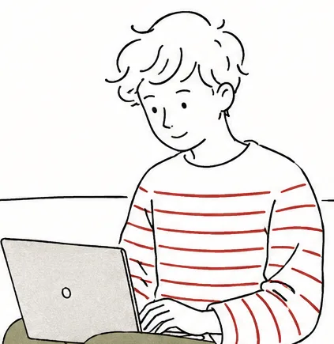

船橋市のホームページ制作 対面サポート・対応エリア
Linplan は、千葉県船橋市のホームページ制作事業者です。船橋市内・近隣へは直接お伺いし、打ち合わせから公開後の更新まで、作る本人が対面で対応します。初期費用0円〜・月額9,900円〜（税別）。制作の進め方や考え方は船橋のホームページ制作（トップページ）でもご紹介しています。
ホームページ制作の対応エリア
船橋市のとなり近くの街も、直接お伺いして対応しています。
- 船橋市全域
- 習志野市
- 市川市
- 鎌ケ谷市
- 八千代市 ほか
船橋市全域に対応しています。船橋駅・西船橋・津田沼エリア・新船橋・下総中山のまわりはもちろん、市内であればどこでも直接お伺いします。実店舗をお持ちの方も、事務所や自宅で事業をされている方も、お気軽にご相談ください。
船橋のホームページ制作を、対面でお手伝いします
同じ船橋にいるからこそできる、近くの作り手ならではの関わり方があります。
直接会って相談できる
メールや電話だけでは伝わりにくい「お店の雰囲気」や「本当に困っていること」。船橋市内ならお店まで伺い、顔を合わせてじっくりお話をお聞きします。
地元だから、すぐ動ける
「ここだけ直したい」「急ぎで見てほしい」。近くにいるので、必要なときはすぐにお伺いできます。何かあったときに顔の見える相手がいる安心感を大切にしています。
公開後も、ずっと伴走
作って終わりにはしません。月々のお支払いで、更新も保守も困ったときの相談もまとめてお任せいただけます。長く一緒に育てていく関係を目指しています。
業種ごとの具体的な進め方も書いています。たとえば 船橋の整体院がホームページで集客する方法 では、ポータルサイト頼みから抜け出すまでの流れを、地元のWeb制作者の視点でまとめました。美容室なら 美容室がホームページで集客する方法、費用を先に知りたい方は 船橋でホームページ制作を頼むといくら？ をご覧ください。
初期費用0円〜、月々のお支払いから
まとまった初期費用をかけずに、小さく始められます。船橋近郊へは直接お伺いします。
どちらも初期費用0円〜（内容に応じてお見積もり）・最低契約期間12ヶ月。スマホ対応・お問い合わせフォーム・サーバー管理・月々の更新代行までが含まれます。買い切りプランや、もう少し大きなプランもご用意しています。
業種別の見本サイト
実際のお仕事と同じ品質・本番と同じ作りで仕上げた見本サイトです。お店に伺うときは、この画面を一緒に見ながら「うちならこうしたい」をお聞きします。
ホームページ制作の流れ
はじめての方でも迷わないよう、4つのステップでご案内します。
ご相談（無料）
まずはお会いして、やりたいことや困りごとをお聞きします。「何から話せばいいか分からない」状態で大丈夫です。ここで費用が発生することはありません。
ご提案・お見積り
お聞きした内容をもとに、ページ構成とお見積りをご提案します。ご納得いただいてから進めますので、無理な売り込みはありません。
制作
デザインから作り込みまで、私が一貫して担当します。途中で実際の画面をお見せしながら、ご一緒に仕上げていきます。
公開・運用サポート
公開したら終わりではありません。その後の更新や小さな手直し、困ったときのご相談まで、近くの担当者として長くお付き合いします。
船橋のお店のAI対策も
「船橋で〇〇のおすすめは？」とAIに聞く人が増えています。船橋市内のお店のAI対策も、対面でご相談いただけます。Linplanのサイトは、Googleで「船橋 ホームページ AI対策」と検索すると1位に表示されています（2026年11月7日時点・成果の詳細）。
伺うのは、作る本人です

坪山ちひろ｜Linplan代表
千葉県船橋市を拠点に、中小企業・店舗向けの Web・アプリ・AI を、企画から運用までひとりで手がけています。システムエンジニアとして培った技術で、設計から実装まで私自身が担当します。営業担当を挟まないので、打ち合わせでお聞きしたことがそのまま画面に反映されます。